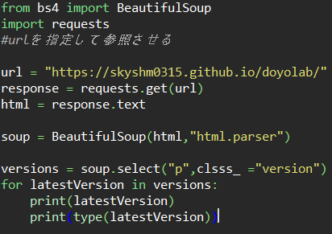
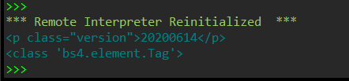
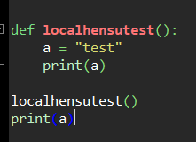
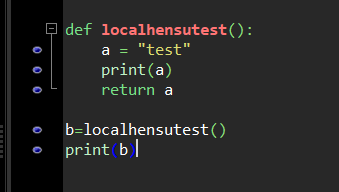

pythonについて僕は『スラスラ読めるpythonふりがなプログラミングという
本を読みながらやったが基本的な内容だったためかこの本にのっていないことが結構あったので、それをまとめようと思う。
プログラミングを少しでも触ったことがある人は知っていると思うがどんな文字列にもデータの種類が決まっている。
文字列であれば文字列という意味のstringから前の三文字をとったstrと表示されるし、
数値であればintegerの前三文字のintと表示される。
ここまでは教科書に載っているところだが、beautifulsoup4の様に外部ライブラリを使う場合注意が必要だ。

このようなコードを書くと変数latestVersionの中身は

これだと数値として扱えない。またデータの型がbs4.element.Tagとなっているからここから操作できない。（数値を比べたり)
そこで今回に関してはrequestsというライブラリを使ってlatestVersion.textと書くと中身だけを取り出すことができる。
大事なことは、常に変数の中身がどうなっているかを確認することが大事だと思う！
ちなみにデータの型はpythonだとtype(変数)で調べることができる。

このように関数内で定義した変数は関数の外で使うことができない。print(a)と実行しても
NameError: name 'a' is not definedと出てきてaが定義されてないといわれてしまう。
もし関数内で計算した変数を外で使いたい場合には、

とうつことで関数の外でも扱うことができる